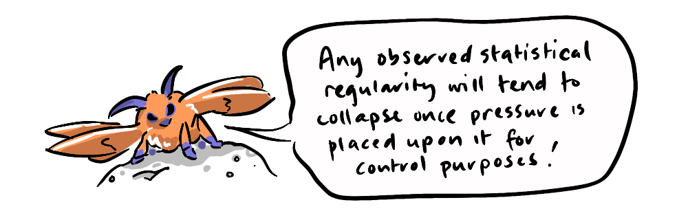

Moths follow one simple rule: in order to move in a straight line, fly at a constant angle to the light. This worked splendidly for millions of years in the moth's evolutionary environment, where their only light source at night was the moon. Because of its distance from earth, as the moth flies, the moon maintains its position relative to the moth.

But when the light source is a porch light, or worse, a candle, this rule can result in a spiral to a fiery death.
The moth has, unwittingly, fallen victim to...
... GOODHART'S LAW
"When a measure becomes a target, it ceases to be a good measure."
- Charles Goodhart*
The unfortunate moth, through its biological programming, prioritises the measure of constant-angle-to-the-light as its target, without factoring in the change in relative position to the light.
If there is such a thing as an economic aristocracy, Charles Goodhart is a part of it. Aside from his brother being actual aristocracy (another story), Charles is the great-grandson of Mayer Lehman—one of three brothers who, in 1850, co-founded the investment banking firm Lehman Brothers.
Charles Goodhart is an academic whose publications include the tomes "What Weight Should Be Given to asset prices in the measurement of inflation?" and "Is a less pro-cyclical financial system an achievable goal?"
But Charles' claim to fame comes from a simple observation, al-be-it comp-lica-ted-ly word-ed:
What Goodhart realised was that simple measures are vulnerable to being gamed. We all know the catastrophic results of using the measure of 'engagement' as a target for social media algorithms—driving conflict and capitalizing on negative emotions—which turn out to be a key motivator for engagement. The same goes for 'ratings' in legacy media, generating molochian imperatives like:
"If it bleeds it leads"
Focusing on the measures of 'engagement' and 'ratings' turns out to be at odds with the externality of our mental wellbeing.

The measures we fail to take into account are externalities—they are the outside costs incurred by Goodhart's Law. The profit motive (target), for instance in business can lead to cost-cutting measures in the form of low wages, layoffs, or reduced safety, at a cost to human well-being (externality), or through the use of cheaper, unsustainable materials at a cost to the environment (externality).
While Goodhart's Law is ostensibly an economic principle, its effects are not confined to the marketplace. Think of the way our bodies seek out sugar because, in our evolutionary development, sugar was a psychological measure of vital calories in nutritious vegetation—which is now gamed by processed food manufacturers, at an expense to the 'externality' of our health.

GDP is a single metric that's meant to stand in for, not only various facets of economic prosperity but also standard of living, despite the fact that its key developer; Simon Kuznets had this to say about it:
"the welfare of a nation can scarcely be inferred from a measure of national income"
In 2008, GDP was at an all-time high. A growth (target) at all costs (discounting externalities) model had led to greater risk-taking—leading to the financial crisis. And, like a moth to a flame, Lehman Brothers, 158 years after it was founded by Charles Goodhart's Great Grandfather, filed for bankruptcy, poof, it was gone.
There are now a number of new measures being put forward to better reflect real value in the world from the Genuine Progress Indicator to the Gross National Happiness Index. These are multifaceted measures, and while the concept of Gross National Happiness may sound silly, it speaks to a value above economics, and reminds us that economic prosperity is not actually a primary goal—it is an instrumental goal, a means to an end. Economic well-being after all is only important in as much as it improves... well-being.
Singular goals, whether it's dollars or likes, can be seductive, but we are not moths.
Recently I've become aware of how many of my goals are instrumental goals in service of shared well-being. This is a complex goal, made up of experiences that can come from anywhere—it's difficult to measure and perhaps that makes it a worthwhile target. So, I am trying to remind myself not to let a singular goal get in the way of moments of enjoyment and connection when they arrive.